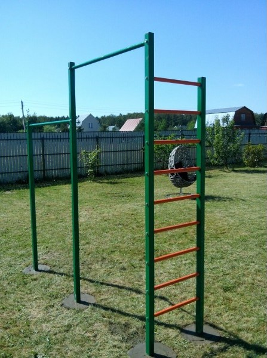

Street workout (укр. Вуличне тренування) — це масовий рух, заснований на заняттях фізичною культурою із застосуванням тренувального обладнання в громадських об'єктах, таких як шкільні двори, парки, спортивні майданчики в міській забудові.[1] Включає тренування на турніку, брусах, яке відбувається на свіжому повітрі.
Основним заняттям на турніку є підтягування. Людина яка займається воркаутом називається не інакше як воркаутер, термін — турнікмен, який часто вживають у засобах масової інформації не зовсім правильний.
Є ще один вид такого тренування, який називається ґетто тренування (англ. Ghetto workout), він призначений на силове навантаження, в той час як Street workout поєднує в собі техніку і силу
